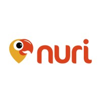
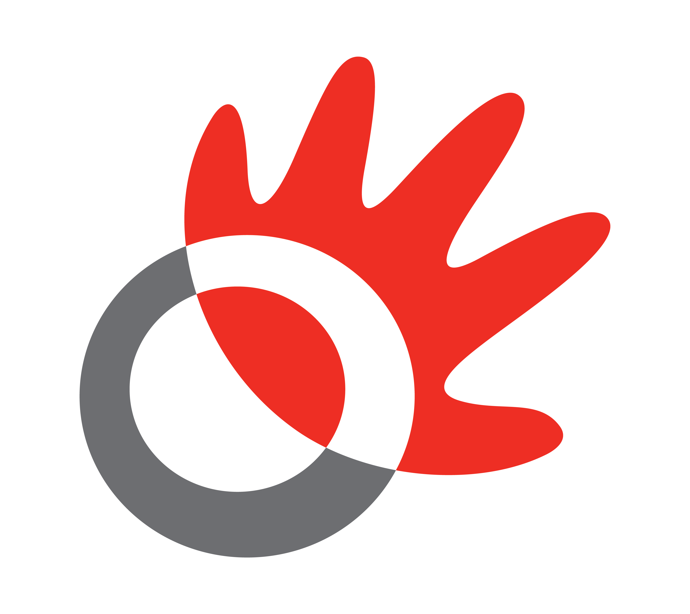
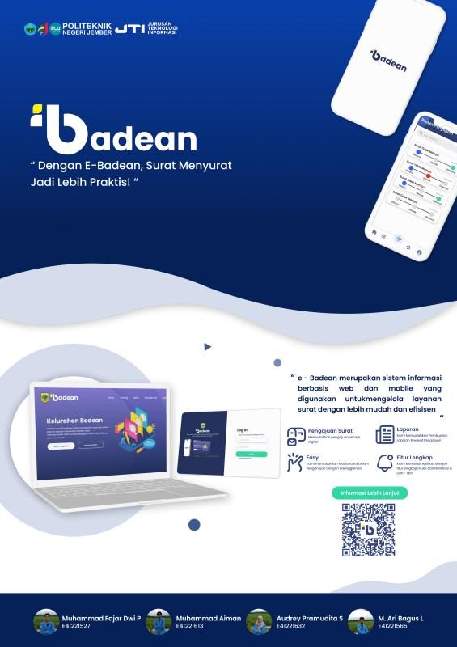
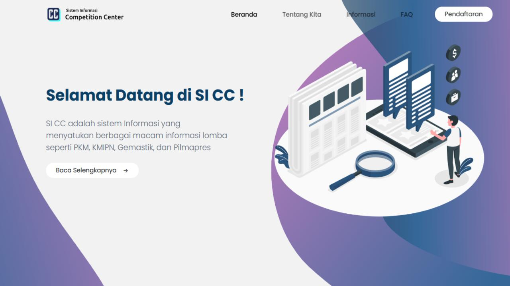

Software Engineering
Aplikasi web, mobile, dan desktop lengkap dengan backend, database, serta autentikasi multi-peran.
Terbuka untuk peluang kerja
Saya seorang Software Engineer
Lulusan Teknik Informatika yang berfokus pada Software Engineering dan AI/Data Analysis: dari aplikasi web dan mobile sampai solusi machine learning dan LLM.
 AP
AP
Klik foto untuk ganti latar
Teliti dalam detail, menjembatani pengembangan perangkat lunak dengan solusi data dan AI.
Lulusan Teknik Informatika (Politeknik Negeri Jember) yang berfokus pada Software Engineering serta AI/Data Analysis. Terbiasa menjembatani pengembangan web dan mobile yang skalabel (Laravel, React) dengan solusi data tingkat lanjut seperti Machine Learning, LLM, dan RAG.
Berpengalaman menyelesaikan proyek end-to-end, mulai dari prototipe UI/UX dan pengujian kualitas berstandar ISO 25010 hingga pipeline otomasi berbasis AI. Senang memanfaatkan data dan arsitektur perangkat lunak yang kokoh untuk memecahkan masalah bisnis yang kompleks dan meningkatkan efisiensi operasional.
Aplikasi web, mobile, dan desktop lengkap dengan backend, database, serta autentikasi multi-peran.
Model machine learning, forecasting time series, LLM dengan RAG, serta analisis dan visualisasi data.
Riset pengguna, wireframe, dan prototipe di Figma, serta pengujian UAT dengan standar ISO 25010.
Rekam jejak magang dan proyek berbasis industri di bidang AI & data, perancangan UI/UX, serta pengembangan sistem dan infrastruktur.
CV. OTW Computer Gusaha · Surabaya, Jawa Timur
Fokus utama: Menyusun alur pemrosesan dokumen dan klasifikasi data agar lebih konsisten serta mengurangi pekerjaan manual berulang pada alur data perusahaan.
FundEx × Rakamin Academy
Fokus utama: Menyederhanakan alur eksplorasi informasi pada dashboard investasi agar lebih mudah dipahami dan dinavigasi pengguna.

NRNuri × Rakamin Academy
Fokus utama: Memperbaiki tata letak perjalanan belanja di perangkat mobile berdasarkan evaluasi pengalaman pengguna dan konsistensi komponen.
Tompokersan & Politeknik Negeri Jember
Fokus utama: Menyelaraskan kebutuhan operasional instansi dengan struktur basis data serta konsistensi alur data antarmodul.
e-Badean & Politeknik Negeri Jember
Fokus utama: Mendukung pengelolaan administrasi surat resmi melalui hak akses terstruktur sesuai peran pengguna di dalam sistem.

TATelkom Akses · Kota Pasuruan, Jawa Timur
Fokus utama: Mencatat kondisi infrastruktur lapangan secara rapi dan membantu pengecekan konektivitas jaringan dasar bersama tim.
 Foto proyek
Foto proyek
Data Analyst & Full Stack Developer
Aplikasi Android pemantau pertumbuhan balita yang memprediksi indikator pertumbuhan dengan forecasting time series dan machine learning. Proyek skripsi.
Lihat detail → Foto proyek
Foto proyek
AI/ML Engineer (Solo Project)
Agen AI untuk penyaringan dan pencocokan lowongan kerja, mencakup arsitektur sistem serta integrasi LLM dengan RAG.
Lihat detail → Foto proyek
Foto proyek
AI/ML Engineer & Full Stack Developer (Solo)
Model klasifikasi status gizi dan stunting dengan XGBoost, dilengkapi interpretasi SHAP dan pelacakan eksperimen MLflow, disajikan lewat FastAPI dan antarmuka React.
Lihat detail →Data Analyst (Bootcamp Project) · Sep 2026
Analisis data penjualan otomotif dengan Excel, SQL di BigQuery, dan dashboard Power BI (DAX). Proyek akhir Bootcamp Data Analyst KarirNex.
Lihat detail → Foto proyek
Foto proyek
AI Engineer & Backend Developer
Otomasi pengolahan data: pipeline parsing otomatis dan integrasi layanan AI untuk mempercepat operasional data.
Lihat detail → Foto proyek
Foto proyek
IoT Developer & Machine Learning Engineer
Penerapan IoT dan AI untuk mengoptimalkan pertumbuhan bayam merah, memadukan perangkat berbasis ESP32 dengan machine learning.
Lihat detail → Foto proyek
Foto proyek
Full Stack Developer
Sistem informasi akademik terpadu dengan autentikasi multi-peran (multi-role authentication).
Lihat detail →
Foto proyekFrontend & Backend Developer, UI/UX Designer
Sistem informasi pelayanan surat Kelurahan Badean, dengan modul manajemen surat resmi dan autentikasi multi-peran.
Lihat detail →
Foto proyekWeb & Mobile Developer
Sistem informasi untuk pengelolaan kompetisi, tersedia di web dan mobile.
Lihat detail → Foto proyek
Foto proyek
Web & Mobile Developer
Aplikasi surat-menyurat untuk Tompokersan yang dapat diakses lewat web dan mobile.
Lihat detail → Foto proyek
Foto proyek
Desktop Application Developer, UI Designer
Sistem informasi laundry berbasis aplikasi desktop untuk mengelola layanan dan transaksi.
Lihat detail →.jpeg) Foto proyek
Foto proyek
Desktop Application Developer, UI Designer
Aplikasi desktop pengelolaan penyewaan (rental) untuk Awan Adventure.
Lihat detail →Lulusan 2026
Sarjana Terapan Teknik Informatika
Berfokus pada Software Engineering dan AI/Data Analysis: pengembangan web dan mobile, machine learning, serta analisis data. Studi ditutup dengan tugas akhir berupa sistem pemantauan pertumbuhan balita.
Klik untuk memperbesar
Lulusan 2020
Teknik Komputer dan Jaringan
Membangun fondasi di bidang komputer dan jaringan, lalu mempraktikkannya lewat magang memantau infrastruktur jaringan broadband di Telkom Akses.
Klik untuk memperbesar
Klik thumbnail untuk memperbesar sertifikat.
Badan Nasional Sertifikasi Profesi (BNSP)
Apr 2026 · berlaku s.d. Apr 2030
Verifikasi ↗Badan Nasional Sertifikasi Profesi (BNSP)
Jul 2025 · berlaku s.d. Jul 2028
Verifikasi ↗Badan Nasional Sertifikasi Profesi (BNSP)
Sep 2023
Verifikasi ↗Digital Talent Scholarship
Jun 2025
Verifikasi ↗Digital Talent Scholarship
Agu 2023
Verifikasi ↗Tertarik berkolaborasi, berdiskusi seputar proyek, atau memiliki peluang menarik untuk dibicarakan? Silakan hubungi saya melalui kanal berikut.